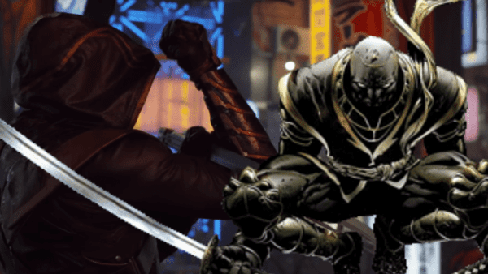
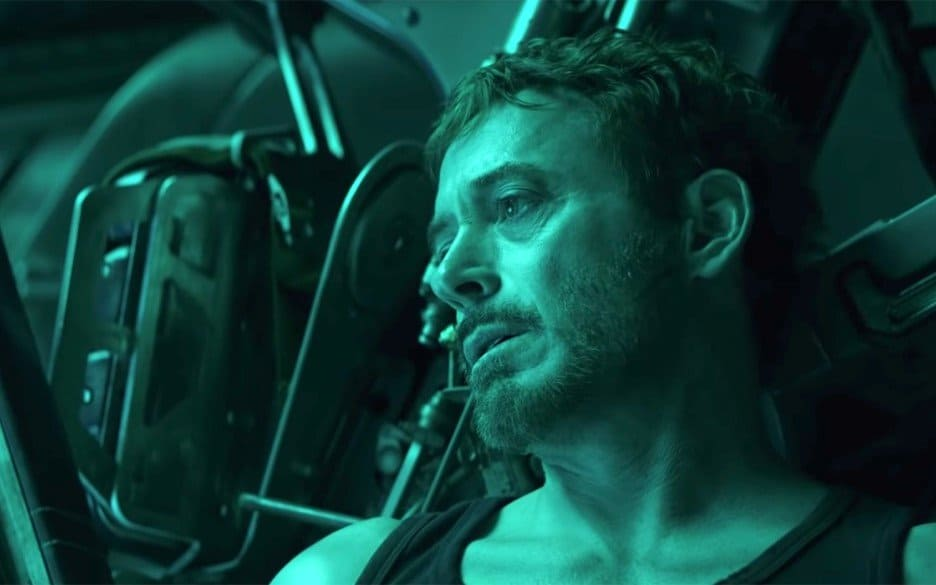
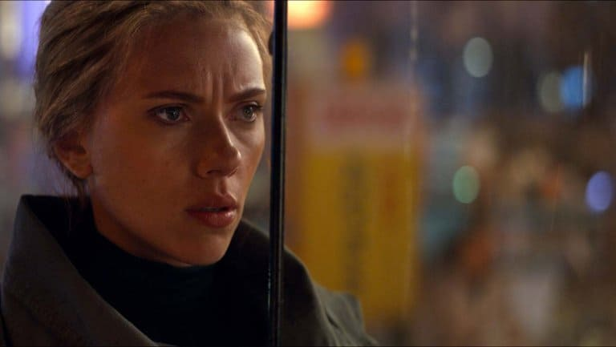

-
MARVEL
-
호크아이의 비극
영화는 타이틀 없이 바로 호크아이의 비극을 보여주었습니다. 단란한 가족 시간을 보내는 호크아이에게 갑자기 눈 앞에서 가족이 사라진다는 것은, 극장에서 정말 “헉!” 소리 나게 만들 수준의 비극이었습니다. 이 장면은 호크아이에게 생길 변화를 너무나도 뛰어나게 관객들에게 설명해주는 명장면이었죠. 텅 빈 농장을 보여주는 데 집중한 화면 구성도 일품이었습니다.
-
아이언맨의 분노
기력이 쇠한 상태에서 간신히 지구로 돌아온 아이언맨을 모두가 반깁니다. 하지만, 아이언맨은 곧 가슴 속에 묻어두었던 죄책감을 그만의 방식으로 터트리기 시작합니다. 앙상한 토니 스타크의 예민하고 히스테리컬한 모습을 보여주는 데 열연을 다한 연기 장인 로다주의 모습도 인상적이었고, 폭발하듯이 캡틴과 대사를 몰아붙이는 장면도 캡틴과 아이언맨의 감정선을 잘 다뤄주어서 좋았습니다. 게다가, 중간에 로켓 라쿤을 보면서 “인형인 줄 알았어.” 라고 관객들을 웃기는 대사도 있는, 여러 감정이 종합선물세트처럼 있는 명장면이었습니다.
-
블랙 위도우의 눈물
5년 뒤를 묘사할 때, ‘마치 죄책감 때문에 이 일을 놓지 못하는’ 듯 한 어벤져스의 모습은 블랙 위도우를 통해서 잘 반영되었습니다. 특히, 흑화된 호크아이의 이야기를 듣고 울면서 샌드위치를 먹는 장면은 블랙 위도우라는 캐릭터와 배우 스칼렛 요한슨이 얼마나 하나가 되었는지 느낄 수 있었던, 감동 어린 장면이었습니다. 게다가 바로 캡틴이 나타나 ‘내 절망적인 요리를 선사해주려 했지.’ 라는 웃긴 대사에 애써 괜찮은 척 하는 블랙 위도우의 모습은 관객들의 가슴을 너무나 아프게 했죠.